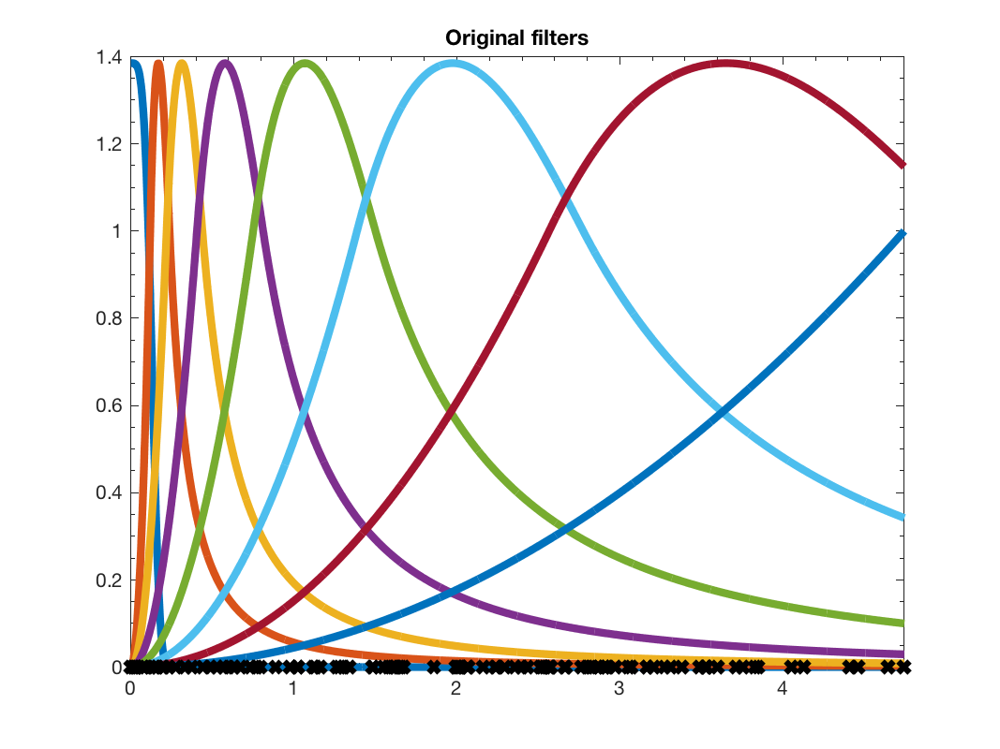

gd = gsp_design_can_dual( g );
This function returns the canonical dual filterbank g. Note that it might not be the be the optimal solution in term of computation.
Example:
N = 100;
G = gsp_sensor(N);
G = gsp_compute_fourier_basis(G);
g = gsp_design_abspline(G,8);
gd = gsp_design_can_dual(g);
paramplot.show_sum = 0;
figure(1)
gsp_plot_filter(G,g,paramplot);
title('Original filters')
figure(2)
gsp_plot_filter(G,gd,paramplot);
title('Canonical dual filters');
x = rand(N,1);
param.method = 'exact';
coeff = gsp_filter_analysis(G,g,x,param);
xs = gsp_filter_synthesis(G,gd,coeff,param);
norm(xs-x)
This code produces the following output:
ans = 1.1674e-14